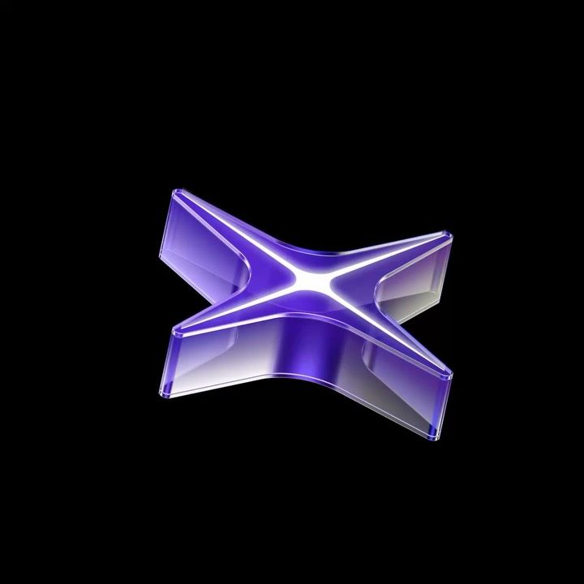

Paper · LuckPerms
Server setup
Configs, permissions, ranks — the unglamorous stuff that holds a server together.
How commissions work →
Most of what's on this site started as someone asking for something that didn't exist yet. Small jobs, agreed in writing, priced before I start.
Configs, permissions, ranks — the unglamorous stuff that holds a server together.
How commissions work →